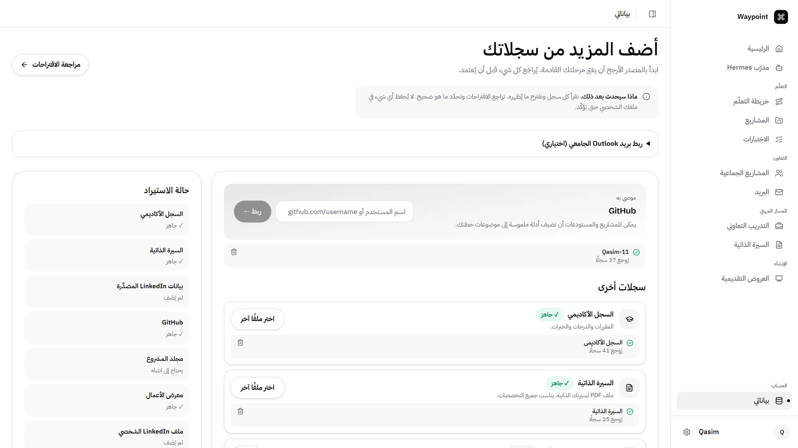
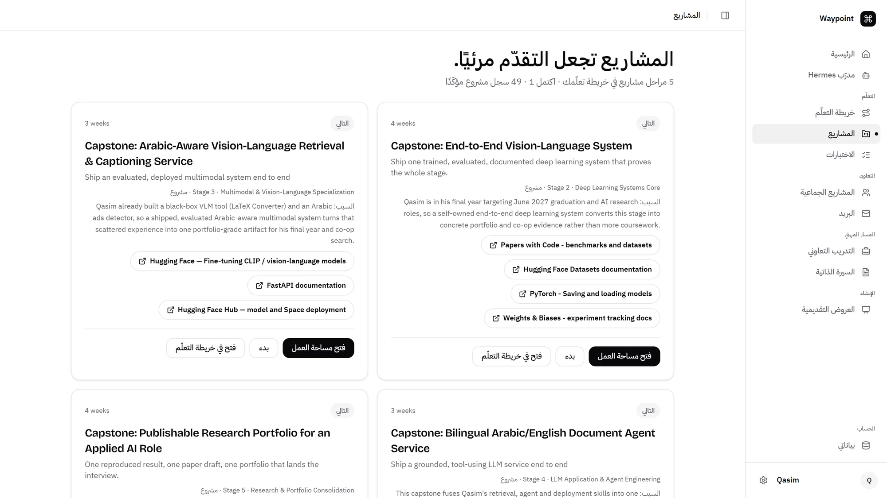
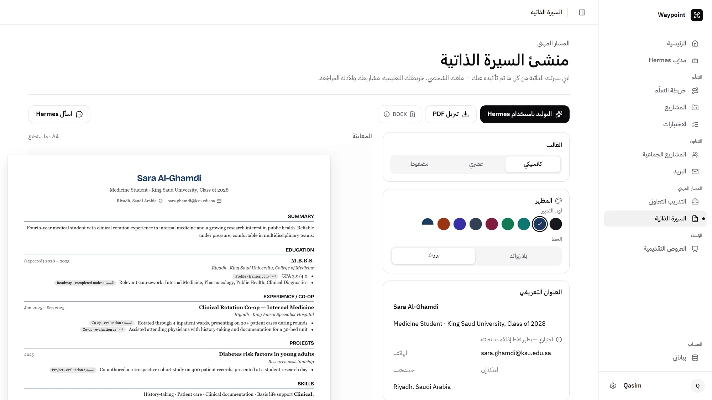

رفيقك من أول يوم في الجامعة… لين التخرّج
السنة الثالثة…
وما زلت ضايع
الجامعة تعطيك مواد ومواعيد… بس مو الصورة الكاملة.
تعرفها نظري…
ما تقدر تبنيها
كلمة agent… ما انذكرت ولا مرة
والـ co-op؟ تدوّر عليه آخر لحظة
بدون AI
الشغل ينسلّم…
والتعلّم لا
والـ chatbot ما يعرفك أصلاً. وفي المشروع الجماعي؟ واحد يشتغل… والباقي يتفرجون.
تطبيقات كثيرة…
ولا واحد يعرفك
وكل مرة ترفع نفس الملفات وتشرح نفسك من الصفر.
تطبيق واحد… يعرفك
مدرّب واحد. خريطة واحدة.
رحلتك الجامعية كلها.
ست محطات…
طريق واحد
عرّف Waypoint
بنفسك
دليل مقترح ← أنت تأكّد
خريطة طريق
مبنية عليك
Hermes يقترح ← أنت تفعّل
مدرّب يعرفك…
ما يحل عنك
يشرح، يسأل، يتأكد إنك فهمت
مشروع لكل مرحلة…
وتقييم بالأدلة
تبني شيء تقدر توريه
فرص تناسبك…
وسيرة من شغلك
الناقص يدخل خريطتك
المشاريع
الجماعية
Hermes زميل… والفريق يقرر
من أول يوم… لين التخرّج
وصلت، وأنت عارف ليش.
لو كان عندي Waypoint من أول يوم…
…ما كنت بوصل السنة الثالثة ضايع
الخريطة اللي كلنا نستحقها
عرّف Waypoint بنفسك
يقرأ سجلك الأكاديمي والـ CV والـ GitHub ومجلدات مشاريعك… وما يعتمد شيء إلا بموافقتك.
- كل اللي ينقرأ يدخل «دليل مقترح»… مو حقيقة عنك
- تراجع وتؤشّر، وبس اللي أشّرت عليه يصير حقيقة مؤكدة
- الملفات نفسها ما تنحفظ، بس المعلومة المستخرجة بعد حجب الحساس

خريطة مبنية عليك
من مقرراتك واهتماماتك ووقتك وهدفك… وفيها اللي يطلبه السوق اليوم: Agents، RAG، Docker، Git.
- حتى أول خريطة اقتراح من Hermes، وأنت اللي تفعّلها
- غيّرت رأيك؟ يقترح مسار جديد، والمنجز والجاري ما ينلمس
- خطوة واضحة اليوم… وفروع مرنة لبكرة
مدرّب يعرفك… ما يحل عنك
يعرف خريطتك ومشاريعك، ويشرح لك من خلال اللي تعرفه… ثم يتأكد إنك فهمت.
- أسئلة، تمارين، بطاقات مراجعة ومؤقّت… داخل المحادثة
- يعطيك خيارات تختار منها، واختيارك أنت اللي ينحفظ
- ذاكرة لك وحدك، وما يتذكّر إلا اللي قلته أنت
كل مرحلة تنتهي بمشروع حقيقي
مو بس تتعلم… تبني شيء تقدر توريه. ووكيل يشغّل مشروعك ويقيّمه بالأدلة.
- تطوّر فكرة المشروع مع Hermes لين تصير شيء تبي تبنيه
- يشغّل اختباراتك ويجرّب التطبيق في متصفح محلي
- كل درجة مربوطة بملاحظة فعلية، واللي فشل ينعرض بوضوح

فرص تناسبك… وسيرة من شغلك
فرص تدريب تعاوني في شركات سعودية، مع سبب التوافق والمهارة الناقصة.
- «أضف لخريطتي» يصنع اقتراح، وما يتفعّل إلا بموافقتك
- السيرة الذاتية من بياناتك المؤكدة فقط، وتنزّلها PDF
- ومو بس للحاسب: طب، هندسة، أي تخصص

زميل في الفريق… مو بدالكم
ارفع ملف المشروع: يطلّع المخرجات والـ rubric والمواعيد، ويقترح توزيع عادل حسب مهارة وهدف كل واحد.
- بس الصفوف اللي تؤشّر عليها من الملف تصير اقتراح للفريق
- الفريق يصوّت: الأغلبية تعتمد، وبعد 48 ساعة يحسم القائد
- /standup · /risks · /catchup: يتابعكم قبل لا تتأخرون